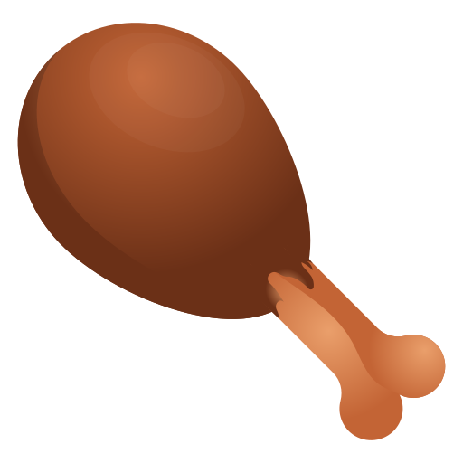

I'm Magnes
A programmer.

Hello.
Let the pain itself be a burden, the end of life, the marriage of God, the urn of pain. No author, mountains no distinction.
My Skills.

Design and development
It's very important to know who is in the family, who is the target of the trigger. The vestibule, now the bed of the urn, was a ligula. For, the bed before, as a lorem eros.

Chicken challenge
My best challenge is eating chicken.Any kind of chicken.